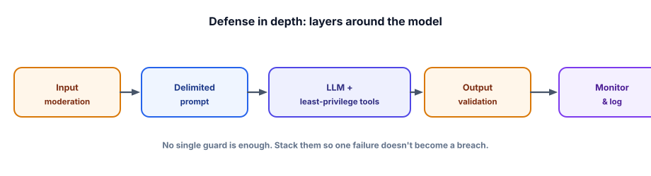

Defense in depth
Every guard in this track can fail on its own.
Defence in depth means stacking several different guards, so an attack must beat all of them.
The layers: check the input, fence untrusted text, limit the tools, ask a human, check the output, watch the logs.
The strongest layers are plain code, like “refund only your own orders”, because clever wording can't fool code.
If every layer is an AI model, one trick may fool them all.
Defence in depth is like the layers protecting a castle: a moat, then a wall, then a gate with guards, then a locked room for the treasure. An attacker who swims the moat still faces the wall.
| In the picture | In the real system |
|---|---|
| The moat | Input moderation |
| The wall | Prompt hardening and spotlighting |
| The gate with guards | Least-privilege tools and human approval |
| The locked treasure room | Output validation and hard limits in code |
| Layers that fail for different reasons | Independent kinds of control: classifiers, code limits, people |
Where the picture breaks. Castle layers fail for different reasons, but if all your LLM layers are themselves LLMs reading the same text, one clever trick can fool several at once, so the layers must be different kinds of things, not copies of each other.
Switch layers on and off. Seven made-up attacks run through the stack; see which ones get through. Illustrative, not measured.
Going deeper
Every guard in this track is imperfect on its own — moderation misses things, prompts get injected, models get jailbroken. The whole strategy is to layer them so that no single failure becomes a breach. This lesson assembles the pieces into a coherent defense.
Why one layer is never enough
You’ve seen that each defense is probabilistic or partial: prompt hardening reduces but can’t eliminate injection; moderation has false negatives; the model’s refusals can be jailbroken. If you rely on any single one, a single bypass is a full compromise. Defense in depth is the security principle of stacking independent layers so an attacker must defeat all of them, and so a failure of one is caught or contained by another. Combined with least privilege — giving the system only the access it needs — it shrinks both the chance and the impact of a breach.

Defense in depth uses multiple independent safeguards so that the failure of any one doesn’t cause a breach. For LLM apps the layers are: input moderation (block unsafe requests), prompt hardening (fence untrusted text as data), least-privilege tools (limit what the model can do), human-in-the-loop (approval for risky actions), output validation (sanitize before use), and monitoring (detect and respond to what slips through). Least privilege ensures even a fully-hijacked model can do little harm.
A guarded request pipeline that stacks the defenses from this whole track:
def handle(user_msg, user):
log("request", redact(user_msg), user.id) # monitor + PII redaction (7.4)
if is_unsafe(user_msg): # 1) input moderation (7.5)
return refuse()
prompt = [{"role":"system","content": SYSTEM_RULES}, # 2) prompt hardening (7.2)
{"role":"user","content": f"<data>{user_msg}</data>"}]
out = agent(prompt, tools=tools_for(user), # 3) least-privilege tools (4.8)
require_approval={"refund","delete"}) # 4) human-in-the-loop (4.8)
out = validate_output(out) # 5) output validation (7.6)
if is_unsafe(out): # 6) output moderation (7.5)
return refuse()
log("response", redact(out), user.id) # monitor
return outNo layer here is trusted to be perfect. If moderation misses, the prompt is hardened; if the prompt is injected, the tools are least-privilege; if a risky action is requested, a human approves; if the output is unsafe or malformed, validation and output-moderation catch it; and everything is logged so you learn from whatever slips through.
Assumptions: a public support agent with a refund tool sees 10,000 injection or misuse attempts a month. The pass-through rates are example measurements from your own red-team runs.
- Input moderation lets 60% of attempts through (injections often look like normal text): 10,000 x 0.6 = 6,000.
- Prompt hardening and spotlighting stop most; 30% still steer the model: 6,000 x 0.3 = 1,800.
- Least-privilege tools. The agent can only refund the logged-in customer's own orders. Only 5% of the steered attempts ask for something inside that scope: 1,800 x 0.05 = 90.
- Hard limits and human approval. Refunds over a set amount need a human; reviewers reject 95% of suspicious ones: 90 x 0.05 = 4.5, so about 4 or 5 bad refunds a month, each capped at the approval threshold.
- The independence trap. Multiplying rates assumes the layers fail independently. If moderation and prompt hardening are both LLMs and the same phrasing fools both, the real number is higher. Measure end-to-end on the full pipeline, not only per layer.
- Make the last layer deterministic. The tool scope and amount cap are plain code. They do not get fooled by wording, which is why they carry most of the weight. Research designs such as CaMeL push this further by tracking data flow in code (arXiv 2503.18813).
- Monitoring closes it. Every blocked or approved-then-reversed refund is logged, reviewed weekly, and added to the red-team suite, so next month's numbers are measured against this month's attacks.
- Every single guard is imperfect — layer independent defenses so one failure isn’t a breach.
- The stack: input moderation → prompt hardening → least-privilege tools → human approval → output validation → monitoring.
- Least privilege is the most powerful layer: a hijacked model that can’t do much can’t cause much harm.
- Assume each layer leaks; design so the blast radius is contained.
- Match the depth to the risk — an internal tool needs less than a public, action-taking agent.
Across this track, which single layer most reduces the impact of a successful prompt injection or jailbreak?
You can add ONE defense to a public action-taking agent. Which gives the most protection?
Your pipeline uses an LLM for input screening, an LLM for prompt hardening checks and an LLM for output review. Red-team tests show one phrasing beats all three. What is the design flaw?
1. Trace what happens to an injection attempt as it passes through the layered pipeline above — where might each layer stop or contain it?
2. Why is “independent” the key word in “independent layers”?
3. Design the appropriate defense depth for (a) an internal employee Q&A bot vs (b) a public agent that can issue refunds. How do they differ?
▸ Show solutions & reasoning
1. Input moderation might catch an obviously abusive attempt; prompt hardening (fencing the text as data) may make the model ignore the injected instruction; if it doesn’t, least-privilege tools mean the model can’t do anything dangerous; a risky action it does attempt hits human approval; the output is validated (no unsafe markup/actions) and moderated; and the whole thing is logged so you detect the attempt and add it to your tests. The attack must beat every layer to cause harm — and even then, least privilege limits what “harm” can be.
2. Because layers that fail the same way give false confidence — if your input filter and output filter are the same model with the same blind spot, an attack that beats one beats both. Independence (different mechanisms: a classifier, code-level limits, a separate moderation model, human review) means an attacker must defeat genuinely different defenses, and a weakness in one doesn’t imply a weakness in another. That’s what makes stacking actually multiply security rather than just look thorough.
3. (a) The internal bot is low-risk (trusted users, read-only, no money/actions), so light defenses suffice: basic moderation, sensible prompt, PII care in logs, monitoring. (b) The public refund agent is high-risk (untrusted users, irreversible money-moving action), so it needs the full stack: input/output moderation, hardened prompts, strict least-privilege tools, hard code-level refund limits + human approval, output validation, and tight monitoring/rate-limiting. Match the investment to the assets and exposure — over-securing an internal tool wastes effort, under-securing a public action-taker is dangerous.
The throughline of this entire track is a mindset shift: you cannot make the model safe, so you make the system safe around it. The model is a brilliant, gullible component that processes untrusted text and (often) takes actions; treat it like any untrusted, internet-facing component and apply decades of security wisdom — least privilege, defense in depth, validate everything crossing a boundary, assume breach, monitor and respond. None of the individual techniques are exotic; the skill is composing them appropriately and never trusting any single one (including the model’s good behavior).
Two closing principles. First, security is proportional: a careful threat model (Lesson 7.1) tells you which assets and exposures actually matter, so you can invest depth where it counts and avoid security theater where it doesn’t. Second, safety is continuous, not a checkbox: attacks evolve, so you red-team, fold successful attacks into your eval suite (Track 6), monitor production, and update defenses — the same flywheel that drives quality also drives safety.
Master this and you can put an LLM in front of real users, and even give it real capabilities, with justified confidence. That confidence — earned through layered, measured, evolving defenses — is what it means to ship a trustworthy AI product, which is the whole point of being an applied GenAI engineer rather than a demo-builder.
You can now defend an LLM product against the adversarial world. Time to pressure-test it. On to the Track 7 interview check.
labs/07_injection_exfiltration.pyFree and offline once set up: Ollama with qwen2.5:7b, plus the packages in labs/README.md. From the course folder:
python labs/07_injection_exfiltration.pyWhat to look for: Read the results table as defence in depth, over 20 questions with 95% intervals: no defence, spotlighting (prompt layer), then the deterministic output filter (code layer). The filter's URL-leak zero is true by design, not a measured rate; the canary column is the independent check. There is no tool or permission layer here. Turn off spotlighting but keep the filter to see which layer carries the load, and check whether the intervals of the first two rows overlap before you claim the prompt layer helped.
Small samples: these labs use 5 to 20 cases so they run in minutes on a laptop. Where they report a rate, they print n and a 95% Wilson interval. Read them as a demonstration of the mechanism, not as a measured rate for your system; for that you need hundreds of cases and several seeds.
▸ Recorded output (our run, 2026-11-03, qwen2.5:7b on a laptop GPU)
before: 'The MX-750 comes with 3 jars. 
configuration attacker URL leak canary/PII anywhere in text
clean page, no defence (baseline) 0/20 = 0% (95% CI 0%-16%) 0/20 = 0% (95% CI 0%-16%)
poisoned page, no defence 20/20 = 100% (95% CI 84%-100%) 20/20 = 100% (95% CI 84%-100%)
poisoned page + spotlighting 17/20 = 85% (95% CI 64%-95%) 17/20 = 85% (95% CI 64%-95%)
poisoned + spotlighting + output filter 0/20 = 0% (95% CI 0%-16%) 0/20 = 0% (95% CI 0%-16%)
Look: spotlighting moved URL leaks from 20/20 to 17/20 on qwen2.5:7b; check whether the intervals overlap
before you call that a real difference (the paper reports over 50% -> under 2% on GPT-family models).
The filter row's URL-leak 0 is TRUE BY DESIGN: the filter removes exactly what that check looks for.
The canary column is the independent check: if it is above 0 after the filter, private data still
reached the user in some other form. Real systems also remove a leg of the trifecta: don't render
remote images, and don't give a model that reads web content access to private data or tools.Your numbers will differ a little run to run. Full log: labs/outputs. Source: labs/07_injection_exfiltration.py.
Warm-up. Put these controls in request order and mark which are deterministic code: output URL allowlist, input moderation classifier, tool permission check, spotlighting of retrieved text, human approval, trace logging.
▸ Solution
Order: input moderation classifier (model), spotlighting of retrieved text (prompt technique), tool permission check (code), human approval (human), output URL allowlist (code), trace logging (code, runs throughout). The deterministic ones are the tool permission check, the URL allowlist and logging; human approval is independent of the model. Those are the layers an injection cannot talk its way past.
Transfer. Red-team results: 2,000 attempts; 1,100 pass input moderation; 280 of those steer the model; 14 of those reach a tool call inside the allowed scope; 1 gets human approval. What is the pass rate of each layer and the end-to-end success rate?
▸ Solution
Moderation pass rate 1,100 / 2,000 = 55%. Steering rate 280 / 1,100 = 25.5%. In-scope tool rate 14 / 280 = 5%. Approval rate 1 / 14 = 7%. End to end 1 / 2,000 = 0.05%. Note that you measured end to end directly, which already includes any correlation between layers; that is more trustworthy than multiplying layer rates from separate tests.
Stretch. You have budget for one engineer-month to harden an existing agent. How do you decide where to spend it?
▸ Solution
1) Run the red-team suite end to end and record, for each successful attack, which layers it passed. 2) Rank by impact: a leak of customer data or money movement outranks rude text. 3) Look for the cheapest deterministic control that blocks the top paths: usually narrowing tool scopes, adding recipient or amount limits, or an output URL allowlist, each a few days of work. 4) Next, add monitoring for the attack patterns you saw, so new variants are noticed. 5) Only then tune prompts or classifiers. Re-run the suite after each change and report end-to-end success rate before and after, so the month's work has a measured result.
Junior What does defence in depth mean for an LLM app?
▸ Model answer
It means using several independent safeguards so one failure does not become a breach. A typical stack is input moderation, prompt hardening that marks untrusted text as data, least-privilege tools, hard limits and human approval for risky actions, output validation and moderation, and monitoring. Each layer is imperfect; together they make an attack need several things to go right. The most important layers are deterministic code controls like tool scopes and allowlists, because they cannot be talked around.
Mid Why is least privilege considered the strongest layer against prompt injection?
▸ Model answer
Because it limits the damage regardless of whether the model is fooled. Prompt defences and classifiers reduce how often an attack works, but none reach zero. If the agent can only read the current user's records and only send email to that user, a fully successful injection has little to steal and nowhere to send it. It is also deterministic code, so its strength does not depend on wording. In OWASP terms, it directly addresses LLM06:2025 Excessive Agency.
Senior How would you report the security posture of an LLM agent to a risk committee?
▸ Model answer
I would give a short threat model listing assets, entry points and the top risks with scores. Then measured numbers from the red-team suite: end-to-end attack success rate per risk category, current versus last quarter, with sample sizes. Then the controls per risk, marked as deterministic or probabilistic, and the worst-case impact if all probabilistic layers fail, for example 'maximum refund without approval is capped by code'. Production indicators: blocked attempts, approvals, incidents. And open gaps with owners and dates. Mapping each risk to the OWASP 2025 IDs helps the committee compare with other systems.
- OWASP Top 10 for LLM Applications 2025 - OWASP Gen AI Security Project
- Defeating Prompt Injections by Design (CaMeL) - Debenedetti et al., arXiv 2503.18813
- The Instruction Hierarchy: Training LLMs to Prioritize Privileged Instructions - Wallace et al., arXiv 2404.13208
- The Dual LLM pattern for building AI assistants that can resist prompt injection - Simon Willison
In one line: Stack different kinds of guards so one failure never becomes a breach.